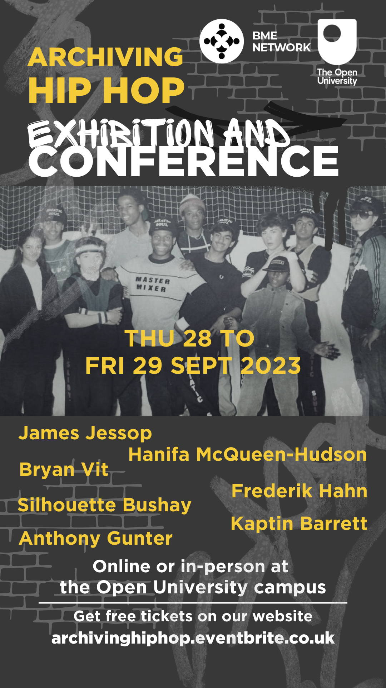

Goal
The aim is to …
To do
Step 1: Recover all the documents from the conference
- Banner
- Poster
- Book of abstract
- Program
Step 2: Clean all the talks for each speaker
- (not my responsability)
Step 3: Create one web-page for each participants and include:
- Abstract
- Talk
Archiving Hiphop#
Conference
50 years have now passed since Kool DJ Herc plugged in his soundsystem at his sister Cindy Campbell’s back-to-school party at 1520 Sedgwick Avenue in the South Bronx on 11 August 1973. This party would eventually be remembered globally as the ‘birth of hip hop’ and as such it marks a starting point of hip hop as an African diasporic culture that is celebrated and practiced around the world. In the 1980s and 1990s British hip hop kicked off and slowly but steadily found its own identity and branched off into several unique musical and cultural expressions. Recording artists such as The Criminal Minds, Congo Natty and Shut Up & Dance successfully fused hip hop music and culture with other existing art forms such as House and Reggae music to pioneer new musical genres such as Rave, Jungle and Drum & Bass. With this conference and exhibition we want to highlight how global hip hop practitioners and hip hop scholars remember, historicise and archive the culture locally. The exhibition will bring to light memorabilia, artefacts and images from the local Milton Keynes hip hop scene from the late 1980s to the mid 1990s. We will invite local breakers, graffiti artists, emcees, deejays, musicians and knowledge producers to showcase their art and culture and reflect on the past and the future of hip hop in Milton Keynes, in the United Kingdom and in the world. Parallel to the exhibition, we will also host a conference, for which we will invite scholars and practitioners to examine how hip hop can be archived, what institutional and cultural challenges such archiving might entail and how we can work collaboratively with local scenes to represent the varied histories of hip hop in ways that are accurate and fair. We invite participants to reflect on the following …
Team (Orga)
- Barry Watson
- Sas Amoah
- Claudia Torres Fernandez
- Marcus Young
- Jaspal Naveel Sigh
Poster
Questions
What happens when hip hop is exhibited in museums ?
Insert (What ?)
How can we archive hip hop knowledge, practices and artefacts ?
Insert (What ?)
What data repositories and hardware are necessary for archiving hip hop ?
Insert (What ?)
How can hip hop archives be funded, sustained and made accessible for the people ?
Insert (What ?)
How to deal with copyright and sampling ?
Insert (What ?)
Who are hip hop archives for ?
Insert (What ?)
How can universities and cultural organisations support hip hop archives ?
Insert (What ?)
Note
I think we can do something smart with those dropdown questions, for example:
- We could think what talk corresponded to what problematic and link to the page of the speaker (with the title of their talk etc)
Apart from standard academic talks and keynote addresses, the conference will also feature novel formats of knowledge production and dissemination, such as knowledge-droppin cyphers, graffiti literacies or scratchin-the-surface of ideas sessions. We want to emphasise that knowledge production within hip hop is both an intellectual and an embodied practice, so we explicitly invite participants to experiment with novel ways of presenting their ideas - in a hip hop way. If you are unsure about what could be possible, feel free to discuss your plans with us beforehand. Just drop us a message.
Speakers
- Keynote
 Wolverhampton
Wolverhampton{kind=link}
{kind=link}
- Regular
Note
List of all the other speakers
Exhibition
To do (Barry)
May be we can implement (or link to) the exhibition here